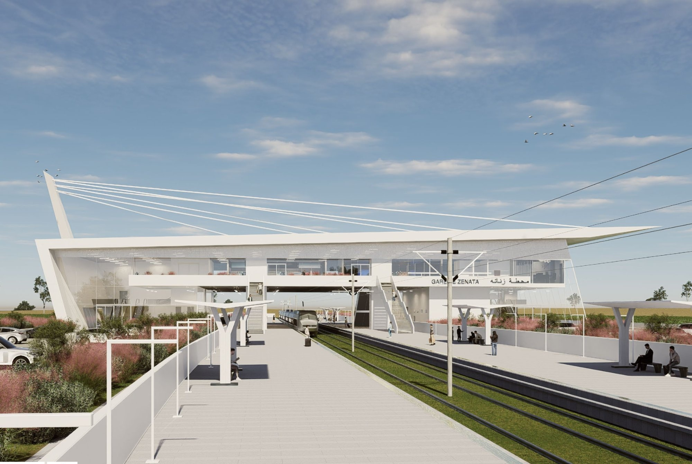
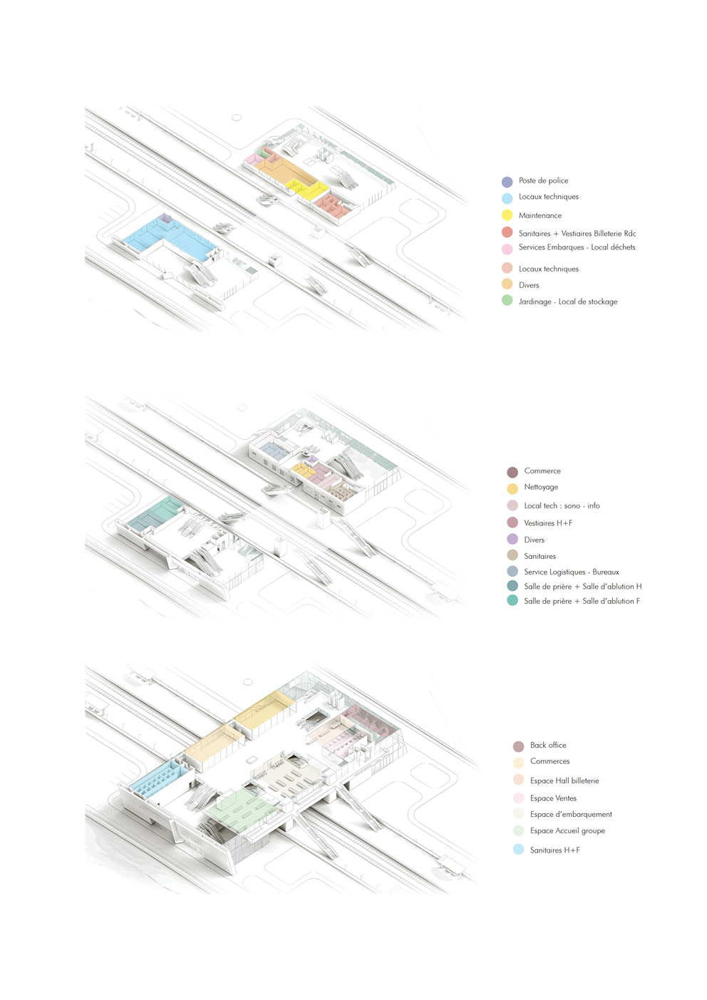

PRO · Infrastructure
Zenata Station
A regional rail station for the Casablanca metropolitan network, designed as part of a feasibility study for a new RER-type line connecting the eastern suburbs of Casablanca to the city centre. The station serves as a multimodal interchange, integrating intercity rail, bus, and soft mobility within a single covered structure at the edge of the Zenata industrial and residential development zone.
The architectural proposal addresses the civic dimension of infrastructure at the city scale: the station is designed to be legible from the highway approach and to create a covered public space that functions beyond train times as a place of urban activity. The project was developed at Yassir Khalil Studio with Hazem co-authoring the structural coordination and the organisation of passenger flows, and was recognised with second place in the competition organised by the Casablanca metropolitan transport authority.
Competition: 2nd Place · Casablanca Metropolitan Rail
Programme and Longitudinal Section
